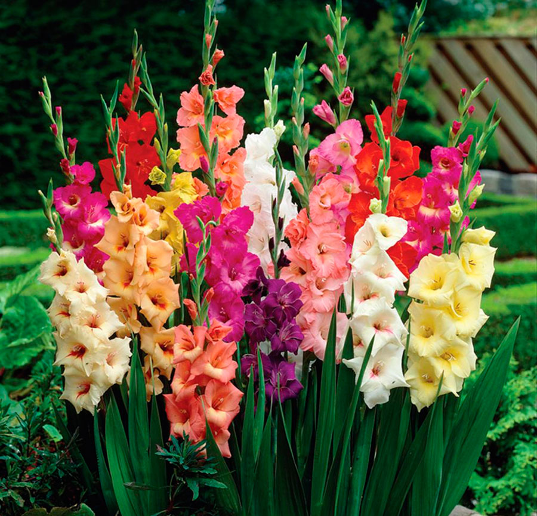

Популярные виды цветов
Список популярных растений
Алоэ
Корни у алоэ вера развиты слабо. Стебель укороченный, он почти незаметен под мясистыми листьями, образующими розетку. Листовые пластинки плотные, мясистые, с пестрыми пятнышками по всей поверхности. По краю листьев расположены колючки. Ширина и высота взрослого растения около 0,6 м. Рано или поздно алоэ выпускает довольно высокий от 0,7 до 0,9 м цветонос.
Его трубчатые желтые или оранжевые цветки имеют длину до 3-4 см. Они собраны в высокое стреловидное соцветие. Раскрываются цветки постепенно, цветение идет снизу вверх. В домашних условиях цветет редко. Гораздо чаще его цветы можно увидеть при выращивании под открытым небом в благоприятном теплом климате. Алое вера совсем несложно посадить и вырастить самостоятельно.
Астра
 Астра – это цветок, который встречается почти в каждом саду. Цветоводы любят его за неприхотливость и красивое цветение до самых заморозков. Растение может быть высотой от 10 до 150 см. Литья обычно зубчатые, лепестки узкие разнообразной окраски.
Изначально астры росли на территории Китая. В Европу их тайком привез монах в 17 веке. С тех пор селекционеры вывели 200 видом астр и множество сортов. В переводе с греческого название цветка означает «звезда». Лепестки цветка похожи на острые концы звезды, поэтому астру считают подарком с неба, от Богов. Ее используют как оберег от неприятностей.
Астра – это цветок, который встречается почти в каждом саду. Цветоводы любят его за неприхотливость и красивое цветение до самых заморозков. Растение может быть высотой от 10 до 150 см. Литья обычно зубчатые, лепестки узкие разнообразной окраски.
Изначально астры росли на территории Китая. В Европу их тайком привез монах в 17 веке. С тех пор селекционеры вывели 200 видом астр и множество сортов. В переводе с греческого название цветка означает «звезда». Лепестки цветка похожи на острые концы звезды, поэтому астру считают подарком с неба, от Богов. Ее используют как оберег от неприятностей.
Газания
Гацания (газания) представляет собой многолетнее или однолетнее травянистое растение семейства Астровые, которое отличается сравнительно низким ростом, коротким стеблем с бледно-зелеными листьями и характерными белыми ворсинками.
Эти растения садоводы называют «африканскими ромашками», так как их соцветия похожи по форме и насыщенности цвета на классические желтые ромашки. Цветки газаний могут вырастать до 10 см в диаметре и обладают язычковой вытянутой формой. В зависимости от сорта и вида эти растения могут быть желтыми, белыми, бронзовыми, оранжевыми или красными, однако у каждого такого растения цветочные листики возле основания отличаются насыщенными темными пятнышками. Каждый взрослый куст газании может за сезон образовать до 30 соцветий с яркими бутонами.
Гладиолус

Цветы «шпажники», или гладиолусы из семейств Ирисовых стали использоваться как декоративные растения в начале ХІХ века, до этого времени близко 300 лет до н.э их применяли в пищу. Первые упоминания о данном растении были в Африке, именно поэтому она и считается его родиной. Шпажник – относится к луковичным многолетним представителям растительного мира. Луковицы округлые или эллипсовидные сверху покрыты защитными чешуйками, состоящими из уплотненных клеток эпидермиса, которые покрыты восковым слоем. Это говорит о защитных приспособлениях растения в живой природе. Такие чешуйки помогают максимально сохранять влажность клубня, что позволяет поддерживать вегетационные процессы.
Ирис
Ирисы считаются одними из самых красивых и распространенных цветов. Их можно встретить на клумбах, в городских парках, на дачных участках. Растение представляет собой прямостоячий стебель с зелеными плоскими листьями и большими цветками разных оттенков (см. фото). Цветы ирисы не только украсят любую клумбу, но и помогут бороться с некоторыми заболеваниями. Также это растение используют в кулинарии для создания потрясающе вкусных десертных блюд.
Свое название цветок получил благодаря пестрым цветам, ведь ирис переводится как «радуга». Растение было названо Гиппократом в честь богини радуги Ириды. Согласно одной из легенд, когда Прометей даровал людям огонь, возникла радуга: настолько природа радовалась этому событию.
Камелия
Камелия – многолетний кустарник или дерево 2-20 м в высоту. Стебли ветвятся от основания и быстро одревесневают. Молодые зеленые побеги бывают опушенными. Со временем они становятся голыми и приобретают серую или светло-коричневую окраску.
На ветках этого вечнозеленого растения располагаются очередные, короткочерешковые листья овальной или яйцевидной формы. Они имеют ровные или мелкопильчатые края и заостренный, вытянутый конец. Однотонные темно-зеленые листочки немного складываются вдоль рельефной центральной жилки. В каждом узле может находиться 1-3 листа. Длина блестящей, опушенной вдоль жилок листовой пластины составляет 3-17 см.
Цветение камелии наступает в ноябре-декабре и может длиться до конца зимы. Отдельный цветок живет до 1 месяца. Крупные одиночные цветы располагаются на прямых цветоножках. Их диаметр составляет 1-12 см.
Крокус
Крокусы (шафран) — самые раннецветущие из семейства Касатиковых. Род крокус насчитывает около 20 видов. Дикорастущие крокусы можно встретить на высокогорных лугах, в горах, на каменистых осыпях Крыма, Кавказа, Средней Азии, Средиземноморья и в средней полосе Европы. Большинство крокусов цветет весной, но встречаются и осенне-цветущие виды.
Характерной особенностью крокусов является отсутствие надземного стебля. Соцветия довольно крупные, направленные вверх. По описанию цветки крокусов в момент зацветания напоминают бокалы или воронки, каждый имеет шесть лепестков, они выходят прямо из клубнелуковицы. Распустившиеся цветки могут иметь звездчатую или чашевидную форму.
Ландыш
Ландыш, имеющий название Convallaria majalis, относятся к травянистым растениям. Это определяется, прежде всего, его строением. Стебли (мягкие, стойкие). Они отмирают, как только цветок перестаёт цвести.
Колокольчики. Имеют специфический, но очень ароматный запах. Обычно на одном стебле их можно насчитать от 6 до 20 штук. Цвет может быть или белым или бело-розовым.
Ландыши можно встретить в лесных массивах. Но если смотреть на его внешний вид, например, на фото, то всегда кажется, что цветок этот нежный, беззащитный, и требует постоянной опеки. Но это не так.
Ландыш — очень сильный цветок, который легко приживается, быстро размножается, да ещё и захватывает территорию для своего размножения. Перепады температурного режима также не страшат его.
Лилия
Ландыш, имеющий название Convallaria majalis, относятся к травянистым растениям. Это определяется, прежде всего, его строением. Стебли (мягкие, стойкие). Они отмирают, как только цветок перестаёт цвести.
Колокольчики. Имеют специфический, но очень ароматный запах. Обычно на одном стебле их можно насчитать от 6 до 20 штук. Цвет может быть или белым или бело-розовым.
Ландыши можно встретить в лесных массивах. Но если смотреть на его внешний вид, например, на фото, то всегда кажется, что цветок этот нежный, беззащитный, и требует постоянной опеки. Но это не так.
Ландыш — очень сильный цветок, который легко приживается, быстро размножается, да ещё и захватывает территорию для своего размножения. Перепады температурного режима также не страшат его.
Наверх